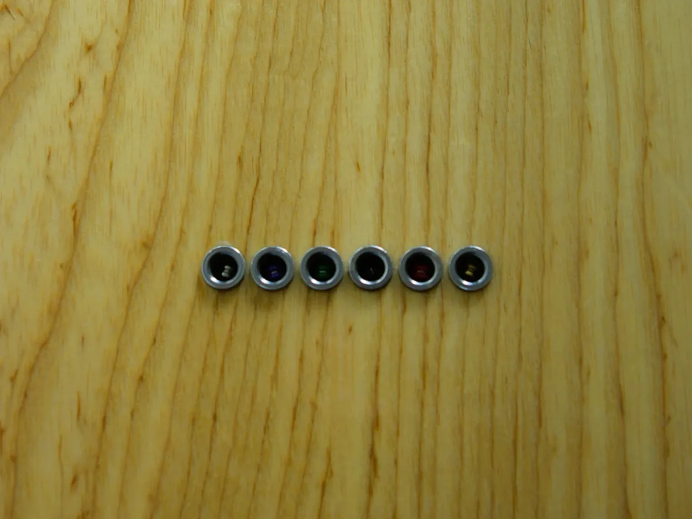

Témoignages
Répartis en deux rubriques, découvrez ici les retours d'élèves ayant suivi mes cours de guitare et de musique, ainsi que ceux d'artistes amateurs que j'ai eu l'immense plaisir d'accompagner dans leurs projets musicaux.

Que la musique reste pour nous tous un espace d'épanouissement et une bulle de douceur au quotidien. Un chaleureux merci à chacune et chacun d'entre vous. C'est aussi à vos côtés que je progresse chaque jour.
Philippe
Témoignages d'élèves
C'est un vrai bonheur d'apprendre la guitare avec Philippe. À notre première rencontre, il m'a demandé une liste des morceaux que je souhaitais apprendre et les a adaptés à mon niveau. Une bien belle approche pour allier apprentissage technique et plaisir de jouer. Je te remercie Philippe pour tous ces bons moments de musique passés avec toi.
J'avais la guitare, j'avais l'envie, il me manquait le bon prof ! Le feeling est tout de suite passé avec Philippe qui nous accueille dans un cadre chaleureux et très pro. À chaque séance le cours est préparé sur-mesure et selon notre niveau, mais aussi notre univers et nos envies. Il sait adapter les cours en fonction de mes objectifs (autonomie sur une compo, les concerts...) et aussi proposer l'exploration de nouvelles choses. En 2 ans de cours réguliers (et de travail personnel car l'un ne va pas sans l'autre), j'ai vraiment constaté une nette progression, que ce soit sur la technique instrumentale, le rythme ou l'harmonie. Si vous cherchez un prof pédagogue, encourageant, bienveillant, passionné, c'est Philippe qu'il vous faut !
À propos. Autrice, compositrice et interprète, Marine est devenue une artiste majeure de la scène nantaise. Découvrez sans attendre son très beau projet musical sur le site officiel de Shama. Et allez l'écouter en concert, ça joue et chante super bien. Good vibes !
Très patient, à l'écoute, Philippe a su me communiquer sa passion pour la guitare. Les cours sont clairs, très intéressants et vraiment bien adaptés à mon niveau. Il m'a proposé une ligne directrice en phase avec mes envies de jeu, tout en restant ouvert à mes multiples questions annexes. La méthode m'aide grandement à ne pas m'éparpiller et à établir des objectifs. C'est avec grand regret que je dois abandonner les cours de Philippe en raison d'un déménagement professionnel. Retrouver un professeur équivalent sera à coup sûr une tâche ardue !
Flûtiste à l'origine, je rêvais d'apprendre à jouer de la guitare et de chanter. Je souhaitais m'appuyer sur mes notions de solfège pour comprendre et pratiquer cet instrument. Philippe a été le professeur idéal pour cette approche de l'instrument qui me rassurait. Grâce à son écoute de mes besoins et à sa grande patience bienveillante j'ai réussi à avancer dans mon rêve. Pédagogue précis, rigoureux et exigeant je lui fais toute confiance depuis le début pour progresser dans la pratique de cet instrument que je découvre plus riche que je l'imaginais. Merci Philippe de m'accompagner dans la découverte d'une portion, adaptée à mon niveau, de cet immense continent musical qu'est la pratique de la guitare et que tu parcours chaque jour et depuis si longtemps avec tant de talent et de passion.
Cela fait maintenant 6 années que j'ai commencé les cours de musique avec Philippe. Débutant complet, ses cours m'ont permis de progresser rapidement en explorant dans le même temps technique instrumentale et théorie musicale. Dès le début, l'objectif a été de savoir ce que je jouais afin de devenir autonome, pouvoir jouer à l'envie des morceaux chez moi en piochant sur Internet. Professeur patient et pédagogue, je continue avec lui les cours afin d'explorer toujours plus de styles musicaux, de techniques de jeu, etc. Nous avons aussi abordé ensemble le vaste sujet du son, le fonctionnement des effets, l'enregistrement en home studio... Il m'a donné également de précieux conseils lors de mes achats relatifs à la musique (guitares, ampli, effets, équipement home studio). Bref, un professeur très complet qui a su me donner goût à la musique et, dès les premières heures de cours, l'envie de progresser toujours plus à la guitare.
Philippe est un professeur passionné et passionnant. Très pédagogue et toujours à l'écoute de ses élèves, il saura vous faire progresser à votre rythme. Je recommande sans hésiter ce professionnel qui saura cultiver en vous le musicien en devenir que vous êtes. Merci encore pour tes cours d'une grande qualité.
Ayant arrêté la guitare pendant quasiment 10 ans, autodidacte rempli de mauvaises habitudes, j'ai réussi à retrouver de la motivation auprès de Philippe. Son approche de l'apprentissage m'a permis de prendre conscience des mauvaises orientations de jeu que j'avais prises. Bien conscient du reste à apprendre pour corriger mes imperfections et être ainsi à l'aise sur différentes façons de jouer, sa patience et ses conseils m'aideront tant que je suivrai ses cours. Nous échangeons aussi librement sur tous les alentours de la guitare. Luthier, ampli, effets, etc... J'ai pu une bonne fois pour toutes ne pas me tromper dans mes achats. Et en plus, il est cool :)
Grand amateur de musique, notamment de rock, j'ai longtemps voulu apprendre la guitare et j'avais même déjà l'instrument depuis une bonne quinzaine d'années. Comme beaucoup de monde j'ai essayé d'apprendre de mon côté et comme beaucoup de monde j'ai vite abandonné... Jusqu'à mes 40 ans, cap symbolique s'il en est, où je me décide enfin à retenter l'expérience, mais cette fois avec un guide. Habitant Rezé, c'est un peu par hasard que je suis tombé sur le site de Philippe, mais quel heureux hasard ! Tout de suite un bon feeling par téléphone, qui s'est vite confirmé lors du premier cours ! 3 ans déjà que Philippe m'accompagne sur ce voyage musical et cette heure de cours hebdomadaire est une vraie respiration dans ma semaine. Philippe est toujours disponible, de bonne humeur et prêt à s'adapter à mes goûts musicaux, ce qui me motive à travailler entre 2 sessions, pour avoir une réelle progression.
Depuis que j'ai commencé les cours avec Philippe, je me sens progresser chaque semaine. Il a tout de suite cherché à comprendre comment je fonctionne et beaucoup observé mes défauts avant de me corriger. Y compris dans mes routines à l'instrument. Les morceaux que je travaille sont tous très adaptés et aussi en fonction de mes goûts musicaux ! Il a su bien comprendre mes objectifs et adapter sa pédagogie en fonction de moi. Je reste un fidèle.
Chaque cours avec Philippe le lundi soir est une vraie bouffée d'oxygène. Toujours patient, bienveillant et à l'écoute, Philippe crée un climat de confiance dans lequel on progresse sans pression et toujours avec le sourire. Pour moi, ce n'était pas gagné. J'ai toujours dit que j'avais deux mains gauches… et pourtant j'y arrive ! Merci de nous accompagner avec autant de générosité et de passion et un merci tout particulier pour son aide précieuse dans le choix de ma nouvelle guitare. Je n'aurais pas pu rêver meilleur guide !
Guitariste autodidacte depuis 20 ans, je désirais enfin prendre des cours pour améliorer et étoffer mon jeu. Le plus compliqué était de trouver un prof qui saurait me faire évoluer malgré mes défauts d'autodidacte et sans prise de tête. Avec Philippe, le courant est tout de suite passé, il y avait un feeling naturel. Certes ce ne fut pas évident de gommer mes imperfections de jeu, mais avec sa patience, ses explications et sa vision, j'y suis arrivé. J'ai encore pas mal de travail à fournir, mais grâce à lui j'ai grandement progressé... Si vous recherchez un prof de gratte sympa, talentueux, pédagogue et à l'écoute, ne cherchez pas ailleurs, c'est le mec qu'il vous faut ! Moi en tous cas j'y retourne cette année.
J'ai toujours aimé la musique et voulu jouer d'un instrument. J'ai finalement opté pour la guitare. Je ne m'y connaissais absolument pas. Je n'étais pas sûre non plus de m'accrocher à l'apprentissage. Puis tous ces témoignages m'ont donné envie de prendre des cours et de contacter Philippe. Par pur bonheur, il s'est avéré que je suis tombée du premier coup sur un excellent professeur, extrêmement patient et enthousiaste, prenant vraiment du temps avec chaque élève. Grâce à lui, je vais bientôt entamer ma 3e année de guitare et c'est toujours avec grand plaisir que j'y retourne chaque semaine pour apprendre de nouvelles techniques, un nouveau style ou encore un peu de théorie dans une ambiance conviviale. En 2 ans de guitare j'ai beaucoup appris pendant toutes ces heures et progressé rapidement avec du travail personnel évidemment. Je vous recommande la rencontre avec ce super prof ! Vous ne serez pas déçu, moi en tout cas je ne suis pas prête à arrêter.
J'ai enfin trouvé le bon format auprès de ce professeur de guitare qui transmet sa passion avec une grande bienveillance. J'apprécie particulièrement sa formule dans son studio musical où l'on peut travailler avec un pédagogue qui sait se mettre au niveau de son élève et le faire progresser en jouant ! L'enregistrement des morceaux à travailler est également un gros plus pour un travail personnel efficace en dehors des cours. Le répertoire est varié, l'ambiance studieuse, toujours conviviale. Sans aucune modération !
Philippe propose des cours « à la carte » avec des apports aussi bien théoriques que pratiques. J'entame avec plaisir ma troisième année de cours avec ce prof qui s'adapte aisément à mon rythme (funky pour ma part) et aussi à mon planning pro décousu. Je progresse donc dans mon timing tout en abordant des courants musicaux que je n'aurais pensé explorer. Le lien humain indispensable est bien présent dans la pédagogie de Philippe. Je vous recommande vivement la rencontre !
Très bon prof, attentif à l'attente de ses élèves. Il n'hésite pas à donner de son temps pour préparer des cours adaptés à mes besoins. Et très sympa !
Témoignages de groupes
Cela fait maintenant 3 ans que Philippe accompagne notre groupe de Rock Soul Blues, les Seven Stories. En plus d'être un bon professeur de guitare et un artiste accompli, Philippe est un coach hors pair qui sait déceler le meilleur en chacun des membres du groupe, avec humour et bienveillance. Il nous a aidés à trouver notre son de groupe, notre groove, mais aussi notre posture. Il a arrangé pour nous deux sets complets en nous aidant à trouver l'ordre des morceaux, en créant avec nous les bons enchaînements et bien sûr en travaillant les débuts et les fins de manière précise. Sa grande expérience de la scène musicale et des concerts nous rassure énormément, il nous donne envie de jouer devant un public et de s'amuser ensemble. En tant que chanteuse lead et choriste du groupe, j'ai appris à prendre ma place, à assumer le lead autant qu'un autre instrument, à me faire confiance. En plus des arrangements instrumentaux, Philippe s'occupe du son et arrange les voix. Il nous fait toujours des propositions musicales de qualité (sur le chant lead, les harmonies vocales ou les chœurs) qui donnent une couleur bien singulière à notre groupe. Plus qu'un coach, Philippe est devenu un ami et une personne qui compte dans l'épanouissement musical que j'ai toujours souhaité. Merci à toi, j'apprends beaucoup à tes côtés !
À propos. Aujourd'hui, Angela et moi donnons des concerts ensemble. Nous avons créé Sweet'n'Salt, un duo qui reprend des hits soul & pop music (YouTube / Linkaband). Chanteuse hyper sincère et talentueuse, c'est un vrai bonheur de l'accompagner à la guitare. Une belle aventure ma copine :-)
Philippe intervient dans notre groupe en tant que coach et aussi ingénieur du son sur nos concerts amateurs. Du point de vue ingénierie du son, il m'a apporté de très bons conseils afin de sonoriser mes deux batteries électronique et acoustique, ce qui m'a permis d'investir dans du matériel adapté. En tant que coach, Philippe est très pédagogue, patient et à l'écoute. Ses conseils sont judicieux et toujours bien placés. Il a notamment permis à notre groupe de développer la bonne gestion des débuts et des fins de morceaux par des ruptures claires du plus bel effet. Il nous a aussi proposé des arrangements afin de donner au groupe une identité plus forte. C'est avant tout quelqu'un de très humain qui mérite de faire partie de votre entourage musical et plus si affinités !
L'aventure du groupe et le coaching avec Philippe ont débuté il y a 3 ans. Le souhait initial était que le groupe puisse aborder les concerts en évitant de tomber dans tous les pièges qui jalonnent le chemin des musiciens amateurs. Optimiser les séances de répétitions, s'approprier un nouveau parc matériel, appréhender les situations de jeu en public tout en restant bien concentré sur la musique, optimiser l'implantation scénique et la sonorisation du groupe… Dans tous ces domaines Philippe a su nous apporter une aide grandement précieuse. D'abord le projet lui a tout de suite plu. Son enthousiasme et son énergie ont contribué à convaincre rapidement les musiciens. Ensuite, il a su rendre cohérente une setlist bien pensée, proposer des arrangements soignés, des tonalités adaptées aux tessitures de la chanteuse et du chanteur. Gros travail, passionnant à découvrir et surtout, pour nous, un début d'autonomie. Concernant les aspects techniques, Philippe s'est pleinement impliqué dans le choix d'un matériel répondant au souhait de pouvoir correctement enregistrer nos répétitions et sonoriser nos concerts. Sa connaissance pointue des matériels de qualité nous a permis d'investir intelligemment dans un parc complet. Table de mixage, enceintes, câbles audio, micros, accessoires indispensables... Un investissement jamais regretté et gros avantage de ce type de coaching. Nous avons ainsi pu progresser rapidement sur tous les plans et gagner un temps précieux par rapport à d'autres groupes qui peuvent se perdre dans des gestions plus laborieuses. Chacune de ses interventions s'est déroulée dans une ambiance chaleureuse de travail. Une attention bienveillante et particulière a été portée à chacun des membres du groupe, en tenant compte des difficultés et donnant à chaque fois des conseils et encouragements toujours très motivants. Évidemment, est née de ce travail une belle complicité qui m'est particulièrement précieuse aujourd'hui. Un grand merci à toi Phil.
Étant chanteur et guitariste, je n'osais pas me lancer dans des solos guitare et je n'avais pas assez confiance en moi pour assumer cette double fonction au sein d'un groupe, qui plus est en concert ! Philippe, notre coach, m'a permis d'oser, de croire un peu plus dans mes capacités, si modestes soient-elles. Aujourd'hui, j'y suis en partie parvenu et progresse grâce à la transmission d'une rigueur musicale que j'étais loin de posséder avant notre rencontre. Aussi, mieux connaître mon instrument et mon matériel de musique m'a fait prendre conscience de l'exigence que requiert la prestation en groupe. Philippe nous pousse à nous écouter les uns et les autres, à ressentir les cycles, le rythme et à travailler sans relâche des parties de morceaux que l'on pense maîtriser alors qu'en concert elles nous échappent. En plus d'être un pédagogue patient, Philippe aime les gens, toujours bienveillant il nous invite à nous exprimer, chacun à son niveau. Grâce à la précision de ses interventions, j'ai pu dédramatiser certains aspects liés à la pratique de mon instrument. Il m'a donné plein d'astuces qui me font prendre conscience que la musique, c'est beaucoup de plaisir si on a bien travaillé en amont. Merci pour tout Phil !
Musicien de scène expérimenté, Philippe m'a généreusement transmis ses savoir-faire et savoir-être. Créer les conditions qui favorisent la concentration, la justesse des départs et des fins de jeu, le filage fluide des morceaux, le lien avec le public, la gestion du stress, le plaisir d'offrir son âme en musique.
Chanteuse, je souhaitais m'accompagner en scène ouverte. Ma professeure de chant (Shama) m'a alors recommandé Philippe avec qui elle avait pris des cours de guitare. Bon professeur, pédagogue, patient, toujours de bonne humeur, il aime transmettre sa passion pour la musique. Ses cours sont très fun et j'ai progressé rapidement. Après deux ans de cours de guitare auprès de lui, je peux m'accompagner en rythme avec le chant. J'ai beaucoup aimé les séances de coaching pour la scène, comment gérer la posture, le stress, la connexion avec le public. Aujourd'hui je suis plus confiante sur scène, je savoure pleinement l'instant, le partage des émotions avec le public.
À votre tour de jouer
Je reste à votre entière écoute par téléphone ou par e-mail pour échanger sur vos attentes et vos projets.